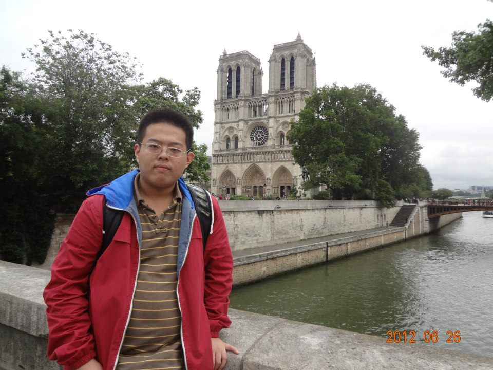

Liwei Wu...
always curious about the world around me
Sports
After I realize how important health is to our study and work, I decide to work out regularly to maintain a healthy life style. I have learnt to play a lot of sports throughout my life. I am good at some sports while I suck at other sports.
Running
It is running that gives me a complete different look, so I am very grateful for running this sports (probably that's also why I list it on the top of my list). I still remember back in 2015 summer when I first started running, I couldn't even finish one mile. Now I have run one 13.1 mile half marathon (Big Sur) and three 26.2 mile full marathons (Napa Valley, Chicago and Big Sur). The photo below are taken during my Big Sur Marathon.
From my marathon experience, I learnt how important is discipline, persistence and never giving up. I realize most things, just like marathons, may seem difficult at first look. But one can definitely overcome the difficulties as long as one keeps working hard without giving up ever.
Fitness
I recently started working out with Francis, who is my personal trainer at Davis. He is experienced and professional. I highly recommend him to anyone interested in fitness lessons.
Basketball
I am a loyal Golden State Warriors fan. I am so glad we won the NBA championship in 2016-2017 season. I went to Oracle Arena to watch them play once every season. I have been playing basketball pick-up games at Davis a few times each week. I have played for about 15 years already and probably will continue to play. I have learnt a lot from the sports. It tells me to be tough and be hard not only on the court but also in life.
Swimming
I like swimming while I am travelling or I have free time. I am not a big fan of swimming in the open waters but I like swimming slowly and freely. It is a good way to kill time and relax yourself when you feel stressed.
Tennis
Although I am a beginner in Tennis, unlike in running and basketball, I really like the watching and playing tennis. I took a beginning course at school for one quarter. I really enjoyed the process although I am not super good.
Photography
Here are the photos of my model.
People
Here are some photos of my model.


Scenery
Here are some photos of beauty I found in life.
Travelling
Even before sports, I like travelling.
Some photos of me in the old days:

Liwei has been to: Brunei, Canada, People's Republic of China, Czech Republic, Denmark, France, Germany, Hong Kong, Japan, Macao, Malaysia, Netherlands, Norway, South Korea, Sweden, Taiwan, United Arab Emirates, United Kingdom, United States
Above: this is Stonehenge with a group of classmates travelling from a break during study at Camrbdige, UK
Below: while I was in Prague back in 2012 (wow, that is a long time ago) and the food still looks so delicious
Below: a fat-version Sherlock Holmes at 221B Baker Street.
Above and Below: while I was in Paris...don't laugh at me (I also feel I was so cute at that time lol) Both Effiel Tower and Notre Dame de Paris are world-famous.
Above and Below: while I was in London：famous Harry Potter site and 2012 Olymic Games special.
More to come.....
Template design by Andreas Viklund